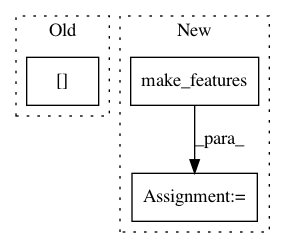

43b377988116600e96d46d9eaae3e2d462fe2923,opennmt/models/language_model.py,LanguageModelInputter,make_features,#LanguageModelInputter#Any#Any#Any#,136
Before Change
"length": tf.identity(features["length"])
}
if not training:
labels["tokens"] = tf.concat([features["tokens"][1:], [constants.END_OF_SENTENCE_TOKEN]], 0)
return features, labels
def make_inference_dataset(self,
After Change
// Labels define the decoder input/output sequences during training and evaluation.
self.set_decoder_mode(enable=True, mark_end=saved_mark_end)
labels = super(LanguageModelInputter, self).make_features(
element=element, features=base_features.copy(), training=training)
return features, labels
def make_inference_dataset(self,
In pattern: SUPERPATTERN
Frequency: 3
Non-data size: 3
Instances
Project Name: OpenNMT/OpenNMT-tf
Commit Name: 43b377988116600e96d46d9eaae3e2d462fe2923
Time: 2019-10-29
Author: guillaumekln@users.noreply.github.com
File Name: opennmt/models/language_model.py
Class Name: LanguageModelInputter
Method Name: make_features
Project Name: OpenNMT/OpenNMT-py
Commit Name: f390cc34b75c2e5dd9b9db1b66ec41525174ee61
Time: 2017-09-05
Author: bpeters@coli.uni-saarland.de
File Name: onmt/Translator.py
Class Name: Translator
Method Name: _runTarget
Project Name: OpenNMT/OpenNMT-py
Commit Name: 0741f0965037f5d845b69a70ce86af2e965e8f0f
Time: 2017-08-20
Author: srush@seas.harvard.edu
File Name: train.py
Class Name:
Method Name: eval